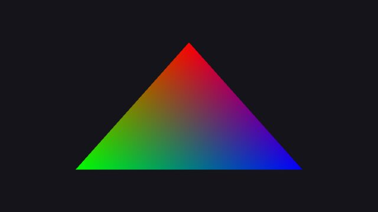
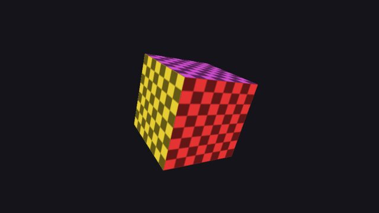
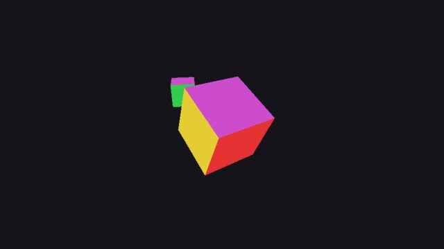
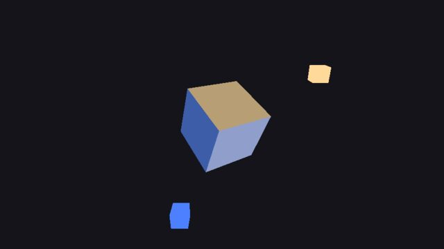
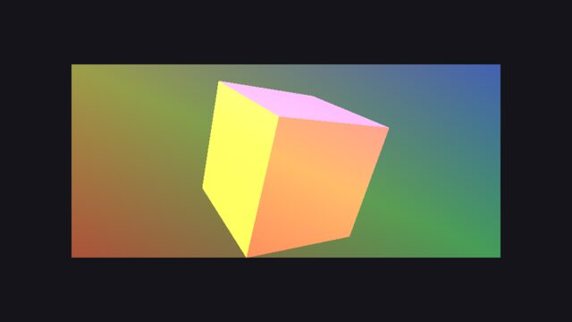
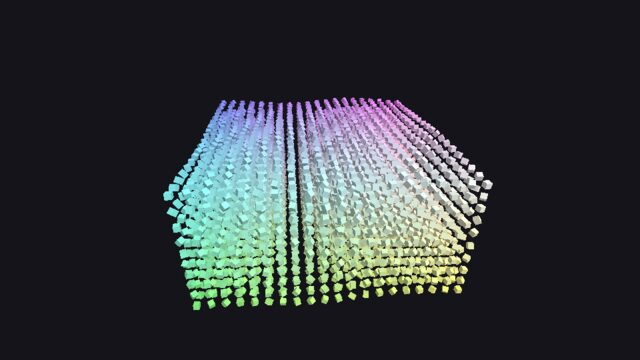
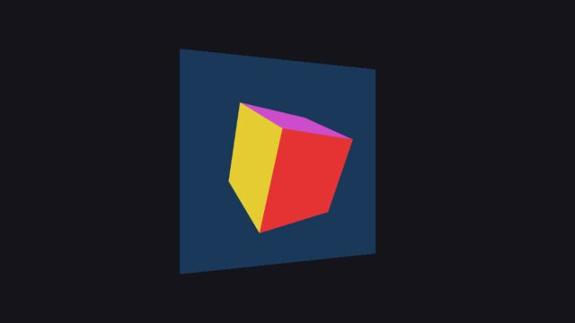
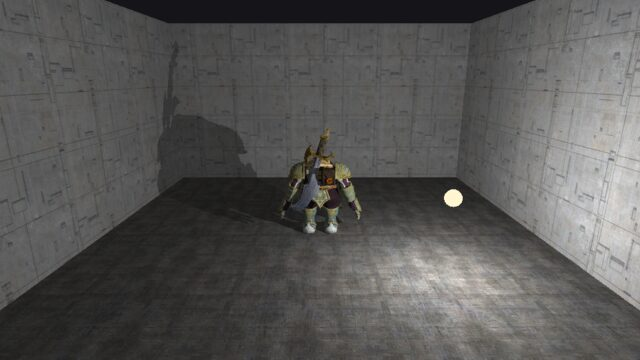
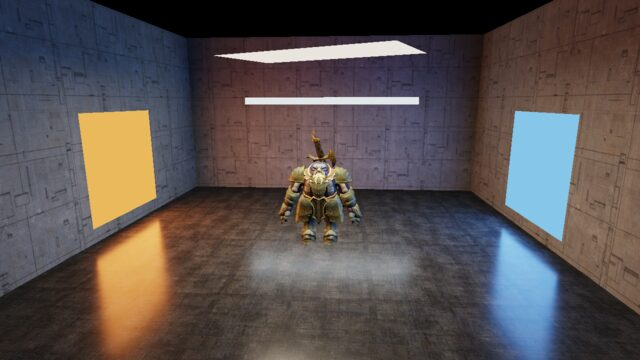

Demos of the prisma renderer running in your browser on WebGL 2. Each one is a small C++ program built with Emscripten; the source is in the prisma-samples repository.
A window cleared to one colour.

One coloured triangle.

A textured cube.

Depth testing and several draws sharing one uniform buffer.

Two directional lights.

Blend modes and stencil masks.

4000 cubes in one draw call.

A multisampled offscreen target with resolve.

Stencil shadow volumes: the silhouette edges are extruded away from an orbiting light in the vertex shader and counted with a two-sided depth-fail stencil.

Rectangle lights with linearly transformed cosines on a PBR floor and a skinned dwarf.
The demos that use compute, tessellation or geometry shaders need OpenGL 4.6 or Vulkan and run from the repository, not in the browser.